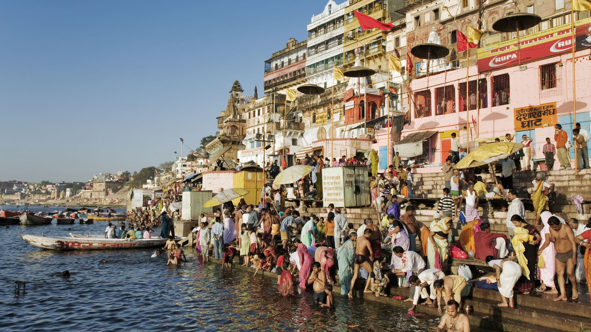

Taj Mahal


Located in Dharmapuri, India; The Taj Mahal is An immense mausoleum of white marble, built in Agra between 1631 and 1648 by order of the Mughal emperor Shah Jahan in memory of his favourite wife, the Taj Mahal is the jewel of Muslim art in India and one of the universally admired masterpieces of the world's heritage. It is considered to be the greatest architectural achievement in the whole range of Indo-Islamic architecture. Its recognised architectonic beauty has a rhythmic combination of solids and voids, concave and convex and light shadow; such as arches and domes further increases the aesthetic aspect.
The best way to get to the location of Taj Mahal is to book a flight in Manila Airport to New Delhi. This cost roughly around PHP 10,000 - PHP 30,000 with a an eta of 9 hours. From New Delhi you walk to IGI Airport Terminal lasting 18 minutes at a distance of 1.5km. ride a bus to New Delhi Railway Station Gate 2. This would take around 2 hours and 11 mins. After that your ride another train costing PHP 90 - 100 to Agra Cantt with a travel time of almost 2 hours. From there you ride a taxi with a travel time of 9mins and a distance of 6.7km. This would cosr around PHP 110 - 140.
The Holy City of Varanasi
{kind=link}
{kind=link}
A major pilgrimage center for Hindus, the holy city of Varanasi has long been associated with the mighty Ganges River, one of the faith's most important religious symbols. Dating back to the 8th century BC, Varanasi is one of the oldest still inhabited cities in the world. It offers many reasons to visit, not least of them the chance to explore the Old Quarter adjacent to the Ganges where you'll find the Kashi Vishwanath Temple, built in 1780 (the New Vishwanath Temple with its seven separate temples is also of interest). Bathing in the Ganges is of great importance to Hindus, and numerous locations known as "ghats" feature stairways leading to the water where the faithful bathe before prayers.